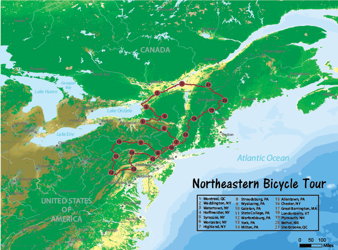

-
This longform infographic portrays many facts and figures about how tornado sirens are being ignored because many consider them to be false alarms (Click image to see full inforgraphic)
-

This small scale bicycle route map shows the 21-day route for the Northeast Bicycle Tour and is complete with terrain relief, landcover and physiography (Click image to see full bicycle map)